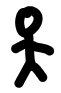

Towercraft v0.2.0
wasd to move
go over hammers for 1 sec to build tower, go over wood to get resources
you need 5 resources to build once
to-do
add money
maybe add collision detection for the tower, if wanted
better sprites

Floors: 0